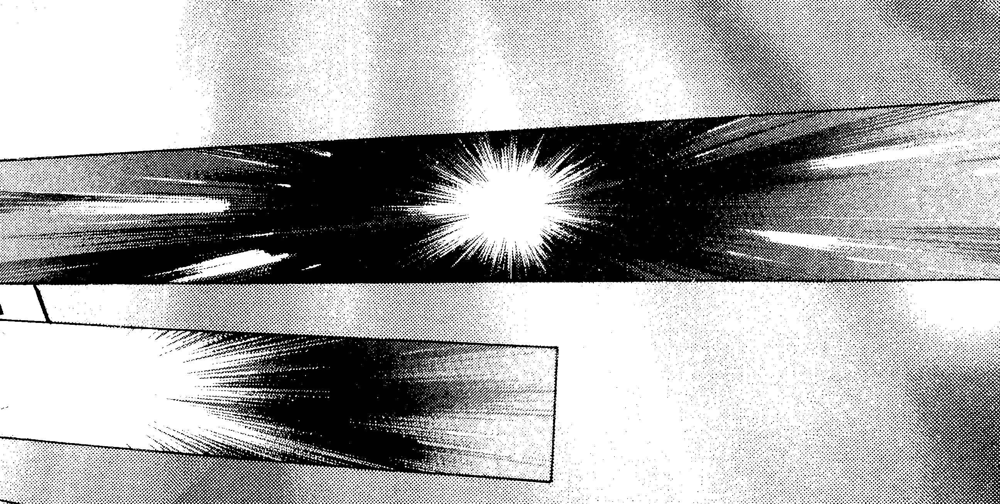
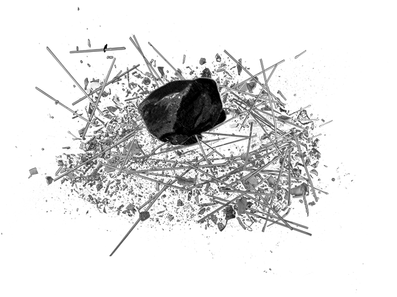
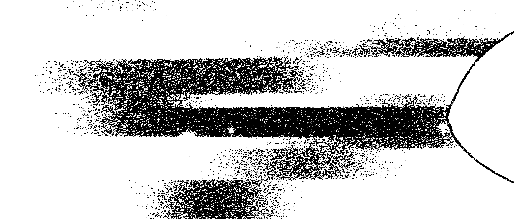

Après Washington et Avignon, avant Metz, Athènes, Digne-les-Bains et bien d’autres villes encore, Vision revient à son lieu de naissance pour briller, encore un peu plus, dans les yeux de ceux qui ne l’auraient pas vu. Une reprise, donc, du mythique Hollywood selon Pierre Megos, époustouflant dans sa performance, vivifiant dans son procédé, exaltant dans sa poétique.
« Courez voir ce film, ou plutôt cette pièce. Mêlant réel et imaginaire, Pierre Megos propose au spectateur de regarder simultanément un film et sa fabrication en direct. Le résultat est soufflant ! »
Catherine Makereel,
Le Soir.
Et si c’était lui l’élu ?

« Avec Vison, Pierre Megos importe le cinéma au théâtre et s’amuse. Nous aussi. Un travail aussi solide que ludique, réflexion pertinente et jamais austère sur la forme, le fond, l’hybridation des arts et leur perception. »
Marie Baudet,
La Libre Belgique.

- Concept, écriture et mise en scène
- Pierre Megos
- Avec
- Pierre Megos, Florence Minder, Kian Cardoen, Lucas Bierlair, Alessandro de Pascale
- Assistant/Doublure
- Alessandro de Pascale
- Administration et diffusion
- Marie-Sophie Zayas
- Régisseur vidéo
- Tonin brunetion
- Création vidéo
- Caroline De Decker
- Création son
- Iannis Heaulme
- Scénographe « cinéma »
- Thomas Delord
- Scénographie
- Christine Grégoire, en collaboraion avec Ledicia Garcia
- Création lumières et direction technique
- Julie Petit-Étienne
- Construction
- Marc Defrise
- Aide à la construction
- Dimitri Megos & Herbert Schüller
- Maquillage
- Maud Liégeois
Une production de Mothership asbl, en coproduction avec la Balsamine. Avec l'aide du Service général des Arts de la Scène de la Fédération Wallonie-Bruxelles, Service Théâtre et le soutien du WBTD (aide à la diffusion).